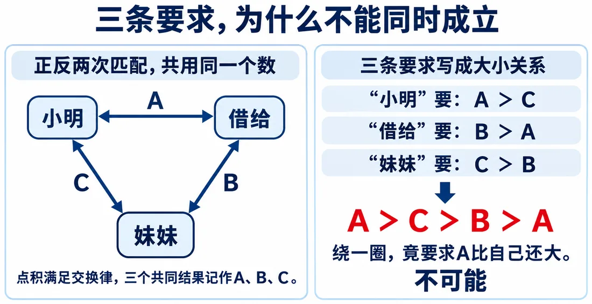
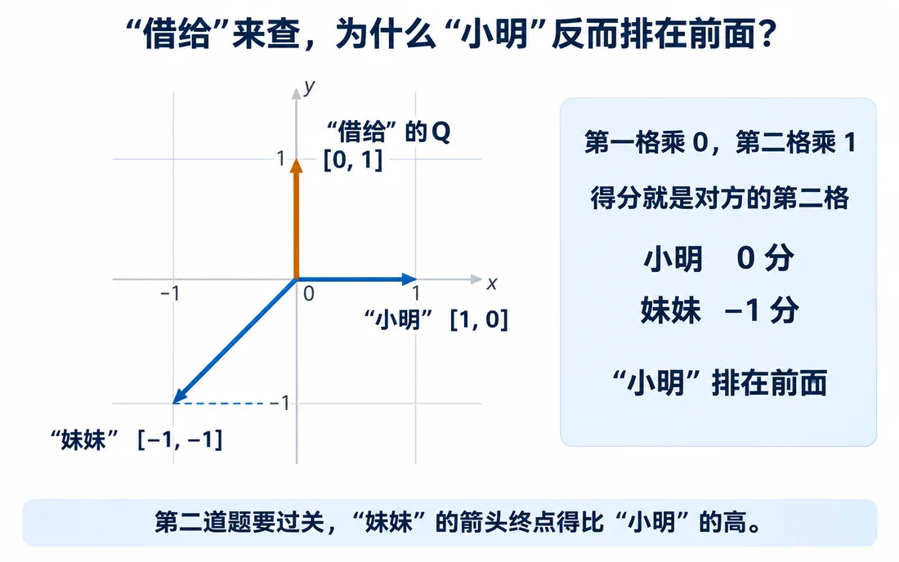

我们在这儿
前 7 篇我们把长句拆成 31 个 Token，起始向量加位置向量，得到句子表 X。又用 Q 点积打分、softmax 换比例、合成资料。
可换几个人来查，这套打分还管用吗？这一篇拿借书这件事出三道题，一起验一验。
这一篇要解决用三道互查题，暴露正反查同分时的矛盾。
大概阅读约 10–12 分钟
轮流站在“小明”“借给”“妹妹”三个位置各问一次：
每次只在另外两个位置里比。希望的那一处分数要更高，打平不算过。
前面先拿同一个向量讲分数，这一篇专门把“我查”和“被查”拆开。
想弄清他做了什么
希望谁前借给 ＞ 妹妹
想弄清书借给谁
希望谁前妹妹 ＞ 小明
想弄清谁借给她
希望谁前小明 ＞ 借给
用 Q 点积检查：
三道题，只过了一道。
“小明”查“借给”，和“借给”查“小明”，用的还是那两组数，只是换了相乘顺序，每格乘积没变，加起来当然同分。
把三个互查分数记成 A、B、C：
连起来，成了 A＞C＞B＞A，A 得比自己还大，电脑算不出这样的数。
根因就是正查反查共用一个分数。换一组数、多加几格，都没用。

要让“谁查谁”的方向在计算里有个说法。还记得宝宝照片吗：一个告诉我们想找什么，一个帮我们认出要找的地方。那就给这两件事，各用一组数。
“我去查”时，还是拿当前位置的输入向量当查询 Q。
“别人来查我”时，从同一个输入另算一组数，专门拿来跟对方的 Q 比。这组数叫键向量（Key，记作 K）。
“小明”查“借给”，用小明的 Q 和借给的 K。反过来“借给”查“小明”，用借给的 Q 和小明的 K。
两次都是点积，可拿去相乘的是两套搭配，分数就有机会不一样了。
K 该怎么算？先拿刚才没过的第二题试。
动手试完，再看静态图：第二题里，小明的分数确实排在妹妹前面。

“借给”的 Q 是 [0,1]，点积结果就是对方第二格：小明 0、妹妹 -1，难怪小明排前。
要让妹妹反超，就让她箭头终点变高。Q 留在原地，只把“小明”“妹妹”拿来匹配的箭头，转同一个角度，长度不变。
小明顺时针转 90° 朝下，第二格变 -1；妹妹转到左上，第二格变 1。
写成数字：[a, b] → K＝[b, -a]。
三个位置都按这条规则算，三道题竟然全过。
这套拿自己 Q 跟对方 K 点积的办法，叫 QK 点积匹配法。正查反查，终于能打出不同的分。
不过这规则是写死的，过了眼前三道题，换组要求还灵不灵？先打个问号。
这一篇收个尾
这一篇拿到：正反查同分会造成 A>C>B>A 的死结。
下一篇接着看：分开“我去查”和“别人来查我”。